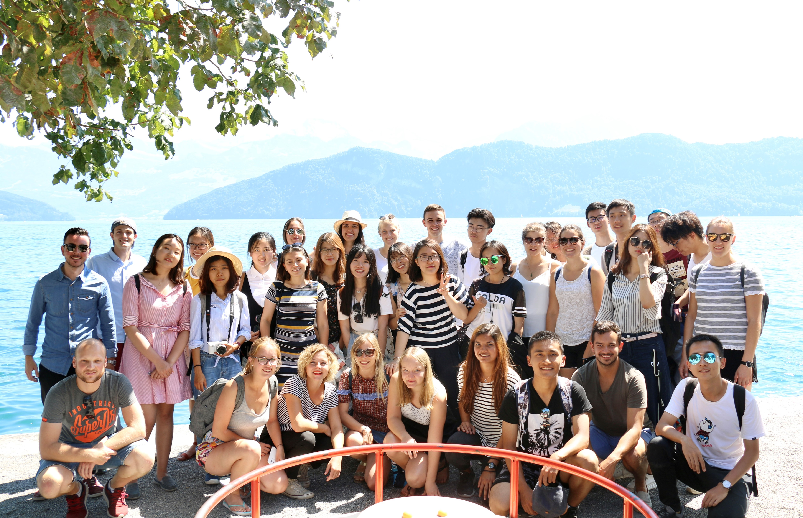

Software Development & Data Science
I'm currently a master student at University of Pennsylvania, major in Computer Science. I am located in Philly, originally from Chengdu, China. Heard of pandas and hotpot? Yup! That's what my hometown is known for.
In the summer of 2021, I graduated with a B.A. degree in Business Statistics & Accounting from Peking University. Though not directly related to computing, such background shaped me to be a better teamworker, equipped me with agile business sense and spirited working ethics that contribute to software design and implementation.
Previous working experiences as a technology consulting intern and a data scientist intern helps me confirm my supreme passion in molding myself towards a lifelong-learning Tech person. I'm also into badminton, photography and music.
Time: 2021.8 -- 2023.5
Graduate: University of Pennsylvania
Major: CIT (Computer and Information Technology)
Coursework: Algorithms & Computation, Intro to Software Development, Data Structure & Software Design, Big Data Analytics, Computer System Programming
Time: 2017.9 -- 2021.6
Undergraduate: Peking University
Major: Business Statistics and Accounting
Coursework: Linear Algebra, Advanced Calculus, Intro to Porbabilty & Statistics, Business Forecasting Analytics, Stochastic Analaysis, Regression Analysis
The St.Gallen Program is an international study tour forum held by University of St.Gallen and Peking University. The annual session lasts 20 days, while the team stays in Switzerland and China for 10 days, respectively.
As the president of the program, I was responsible for recruiting delegates from my own country, projecting local cultural exploration activities, which contains company visits to Bloomberg, Hyundai, camping on the Great Wall, holding calligraphy and opera learning courses and so on.
© 2021 Klaus Chen.